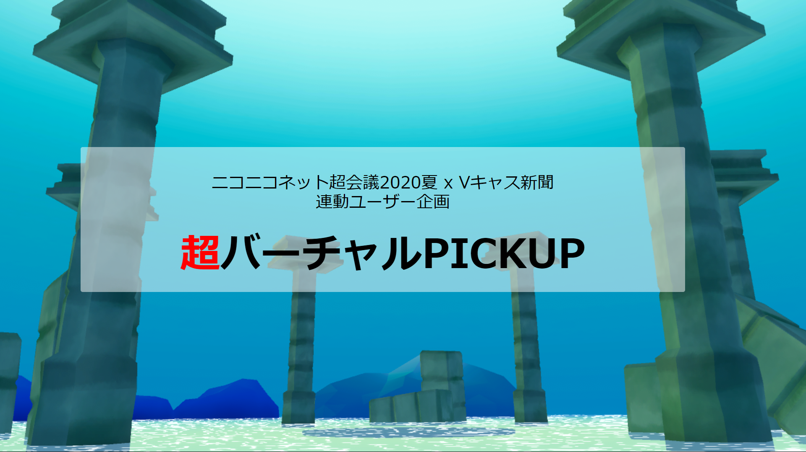

ここはデモサイトです
※サイトの基本的構造は超会議公式サイトと同じです。※
「バーチャル」なユーザー企画をPICKUP！（短文説明）
超バーチャルPICKUP（タイトル）
※サムネイルは、必ず横長でお願いします。比率推奨サイズは16:9です。※
「バーチャル」なユーザー企画をPICKUPします！（概要）
ニコニコネット超会議2020夏と連動して行われる「バーチャル」な企画を「Vキャス新聞」でPICKUPします！（概要文）
バーチャルキャストだけでなく、カスタムキャストやLive2D、VRChatなど使用ソフトは問いません！！（概要文。段落分けもできます）
※概要文です。段落分けもできます※
見どころ（小見出し）
※連絡事項や、みどころの記載にどうぞ。※
動画/生放送（埋め込み）
※埋め込みは、ニコニコ動画/生放送、Twitterのいずれかを推奨します（YouTubeも可能ですが、埋め込みサイズが小さくなります）※
出演者（企画者＋すでに決まっている出演者などいれば）

バーチャルなユーザー企画（特設ページTOP 企画一覧）

超バーチャルPICKUP
「バーチャル」なユーザー企画をPICKUP！配信ツールは問いません！
記事掲載 企画紹介Webサイト
2020/08/09
超寝配信（夏）
画像なしも一応可能（あったほうがいいよね）
寝配信 VR睡眠 Vキャス凸歓迎 （ここはジャンル・タグです）生放送
毎日 02:00~

超バーチャルで踊ってみた
公式の超踊ってみたメドレーをバーチャルで踊ってみた！
踊ってみた 超踊ってみたメドレー2020動画
2020/08/10 19:00
説明
サイトの基本的構造は超会議公式サイトと同じです。
サムネイルは、必ず横長でお願いします。比率推奨サイズは16:9です。
埋め込みは、ニコニコ動画/生放送、Twitterのいずれかを推奨します（YouTubeも可能ですが、埋め込みサイズが小さくなります）
出演者のSNSリンクのアイコン（など）は、大半の国際的サービス＋niconicoに対応しています。(使えるSNSアイコンはfontawesomeを参照ください)
企画一覧のタグは運営で設定します。